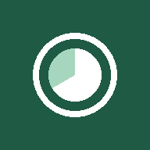

Piani dietetici per dietisti e nutrizionisti: pazienti, diete con alternative, prescrizioni, visite, diario alimentare e confronto con i LARN.
Apri l'appInformativa privacyAndroid: scarica l'APK dall'ultima versione indicata dallo sviluppatore e aprilo per installarlo. Gli aggiornamenti successivi si fanno dall'app (Dati → Aggiornamenti).
iPhone: apri l'app in Safari → Condividi → Aggiungi alla schermata Home.
PC: apri l'app in Edge o Chrome → menu → App → Installa.
I dati restano sul dispositivo di chi usa l'app. Se si attiva la sincronizzazione con Google Drive, viene salvata una copia cifrata nello spazio riservato all'app del Google Drive personale dell'utente. Dettagli nell'informativa privacy.